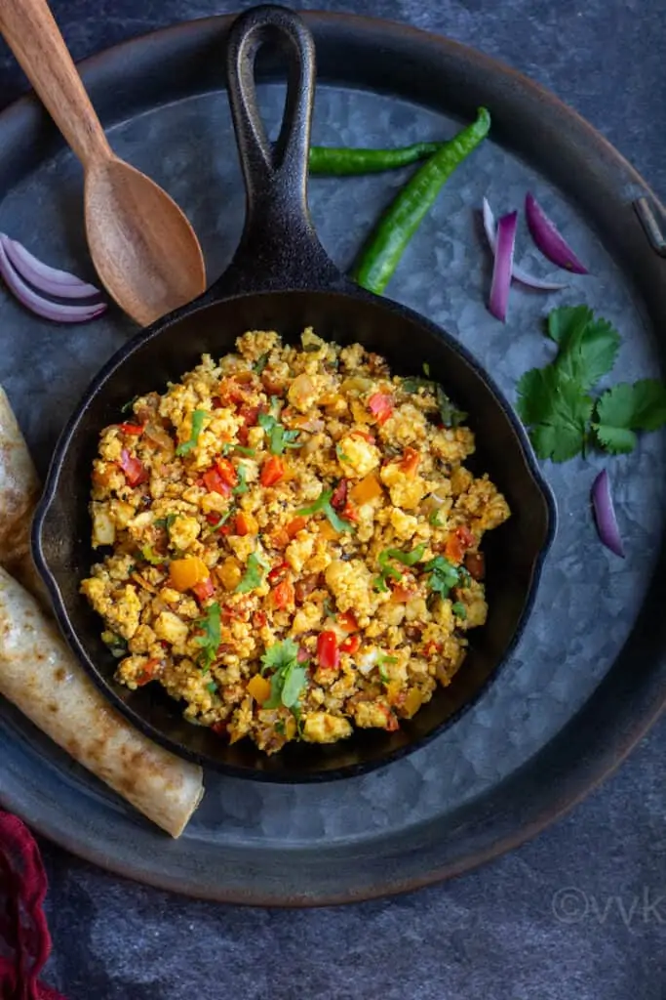

Paneer Bhurji

Description
Paneer is an integral part of Indian cuisine. We cook it in so many ways.
One of the easiest ways you can cook it is in form of paneer bhurji.
Bhurji means scrambled so here the paneer is crumbled and then cooked with
onion, tomato and spices. This dish comes together rather quickly and
tastes great with roti or paratha or with toast.
Ingredients
- 1 tablespoon oil or butter
- ½ teaspoon cumin (jeera) seeds
- ½ teaspoon minced garlic
- 1 teaspoon minced ginger
- 1 green chili finely chopped
- ½ cup onion finely chopped
- ½ cup tomato finely chopped
- ¼ teaspoon turmeric powder
- ½ teaspoon red chilli powder
- ¼ - ½ teaspoon garam masala powder
- salt to taste
- 1 cup crumbled paneer/cottage cheese (appx 100 grams)
- 2 tablespoon chopped coriander leaves
- 1 tablespoon lime juice
Steps
-
In a Kadai, add oil, once oil is hot, add cumin seeds and let them
splutter. Then add minced ginger, garlic, green chili, and saute for a
few seconds.
-
Next, add onions and saute them till they are soft and translucent.
-
Then add the finely chopped tomatoes, turmeric powder, red chili powder,
garam masala, salt, and mix well. Cook until tomatoes are soft and
mushy.
- Then add crumbled paneer and cook for 1-2 minutes.
-
Finally, add lime juice and garnish with coriander leaves and switch off
the flame.
-
Dry paneer bhurji recipe is ready and can be served with roti, naan,
rice.